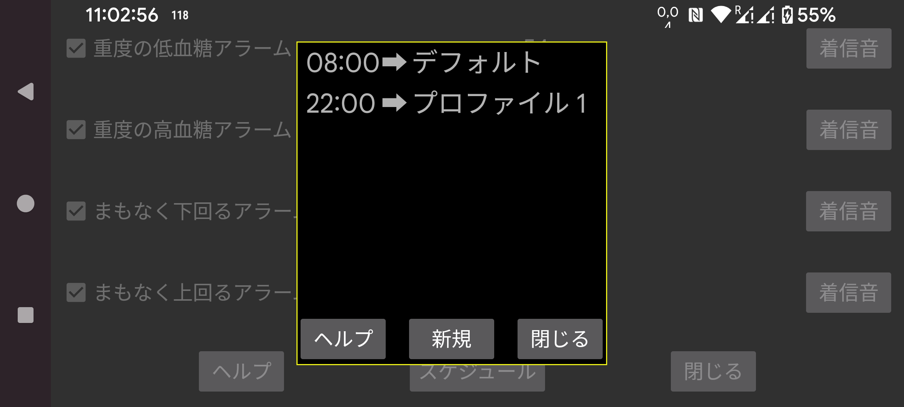
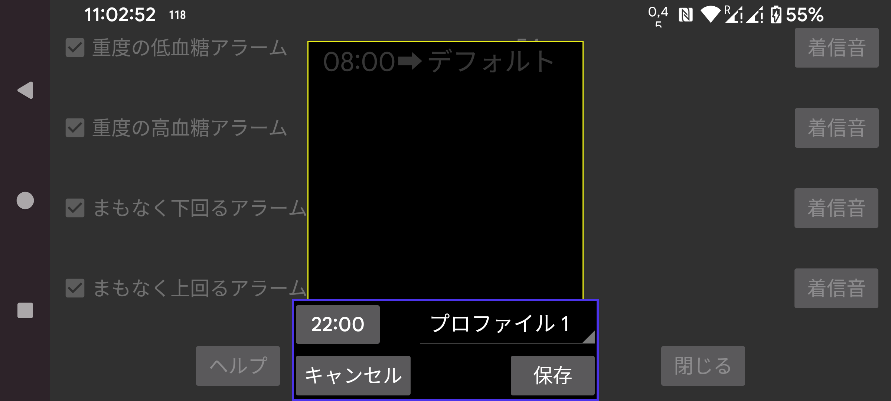

指定した時刻にプロファイルを有効化するスケジュールです。「新規」を押して、特定の時刻とプロファイルとの関連付けを作成します。Juggluco は毎日その指定時刻にそのプロファイルへ切り替えます。時刻とプロファイルの関連付けはタッチして編集できます。
アラームと音声のすべての設定は共通のプロファイルに紐づいています。どのプロファイルが有効かは左メニュー → 設定 → アラームおよび左中メニュー → 音声に表示されます。初期状態では「デフォルト」プロファイルが使われ、「プロファイル 1」や「プロファイル 2」などに変更できます。アラームと音声で指定した内容は、有効なプロファイル固有のものになります。
プロファイルへの切り替えはスケジュールできるが終了はできないと考えるユーザーがいました。しかし、デフォルトプロファイルへの切り替えをスケジュールするだけで簡単に実現でき、終了時刻を追加するのと同じ効果が得られます。